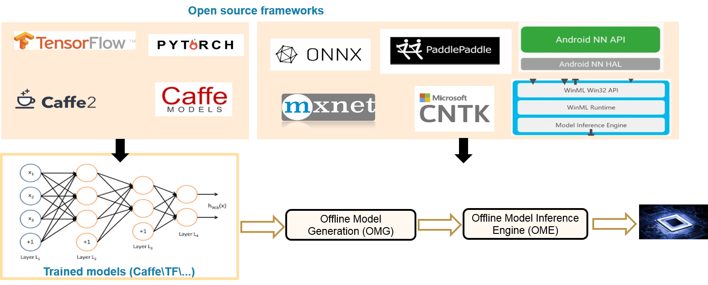
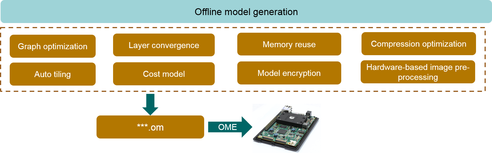

Offline Model Conversion
You can convert an open-source neural network model such as a Caffe or TensorFlow model into a model supported by the Huawei NPU. Figure 1 shows the overall solution.
Figure 1 Offline model conversion solution

- Offline Model Generation (OMG): offline model generation tool, which automatically selects a proper optimization policy to generate an offline model.
- Offline Model Inference Engine (OME): model inference execution engine, which efficiently executes operators for the neural network model.
Figure 2 describes the key technologies involved in offline model conversion.
Figure 2 Key technologies involved in offline model conversion

An optimal policy is automatically selected to generate an offline OMG model.
Perform the following steps to convert a model:
Right-click a project and choose Convert Model from the shortcut menu, or choose Tools > Convert Model from the menu bar. The model conversion window is displayed.
Mind Studio offline model conversion supports only Caffe and TensorFlow models.
You can enable 8-bit quantization. With the verification set input, faster inference is obtained at a low memory cost.
See area 2 in Figure 3.
Implement hardware-based image pre-processing during the input to the first layer in the NN, accelerating operation efficiency.
See area 3 in Figure 3.
You can encrypt a model by using hardware keys to support the intellectual property right of the model.
See area 4 in Figure 3.
You can monitor the whole model conversion process in a visualized way.
After successful conversion, a message is displayed indicating the storage space occupied by the model and its runtime memory usage, helping you to identify resource risks in advance.
If the model conversion fails, you can view the operator analysis report automatically generated.